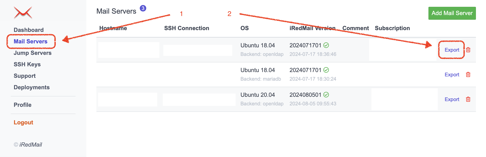
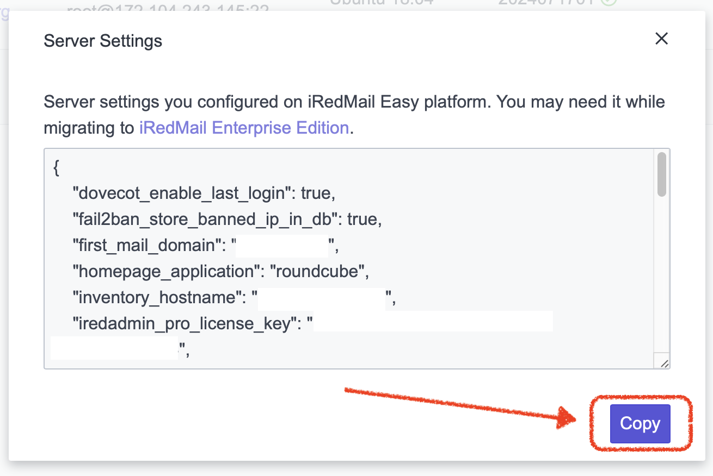
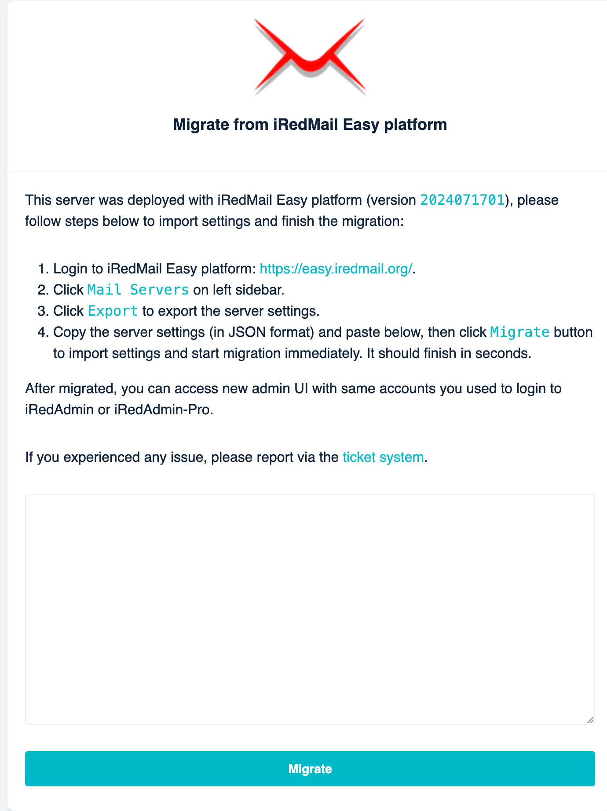

Attention
Check out the lightweight on-premises email archiving software developed by iRedMail team: Spider Email Archiver.
Attention
iRedMail Team can help migrate your iRedMail server, feel free to Contact Us.
iRedMail Enterprise Edition (EE for short) uses almost same deployment code
as iRedMail Easy, migrating from iRedMail Easy to EE is a breeze.
Mail Servers on left sidebar.Export. It will display a modal window to show you the server settings.Copy on the modal window to copy server settings in JSON format.Follow the iRedMail EE installation tutorial to download and launch the installer on the server which was deployed with iRedMail Easy platform.
EE launches the http service on port 8080, please make sure this port
is open in your firewall, then visit it with a web browser.
Paste the copied server settings and paste below, then click Migrate button
to import settings.
Next to review the settings.Migrate to start the migration immediately. It should finish in seconds.https://your-server/admin/,
login with same admin accounts you used to login to iRedAdmin or iRedAdmin-Pro.Deployments on left sidebar, then click
Re-perform full deployment to apply config file changes to fully migrated
to iRedMail EE. Usually it finishes in just seconds.That's all.
If you experienced any issue, please report via the Ticket system.
  